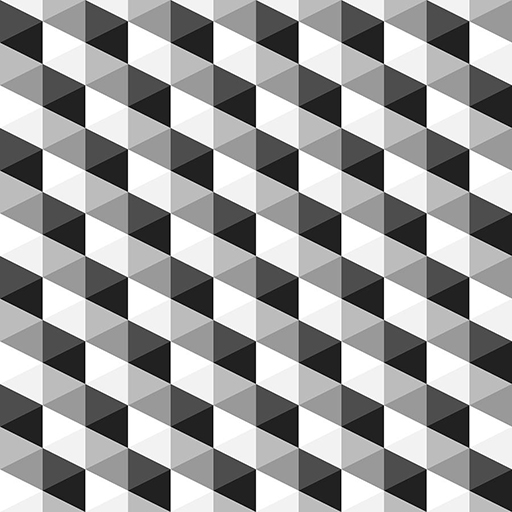

CO2 Emissions by Region
by Katrina Wijaya and Karen Li
Legend
X-axis -- Lists the following regions in order: Central Europe and the Baltics, East Asia and Pacific, European Union, Latin America and Carribean, Middle East and North Africa, North America, South Asia, Sub-Saharan Africa
Y-axis -- Yearly CO2 emisions (kilotons). The bar in the front represents the amount of emissions in 1960 and the bar in the back represents the amount of emissions in 2013.
Navigation
[LEFT]/[RIGHT] -- change the heading (azimuth) of the camera
[UP]/[DOWN] -- change the position of the camera along the Y-axis
[i]/[j]/[k]/[m] -- move the camera forward, left, right, or back relative to the current heading
[c] -- cycle the colours of the bars
[n]/[w] -- narrow/widen the field of view while maintaining square aspect
[r] -- reset to starting view
